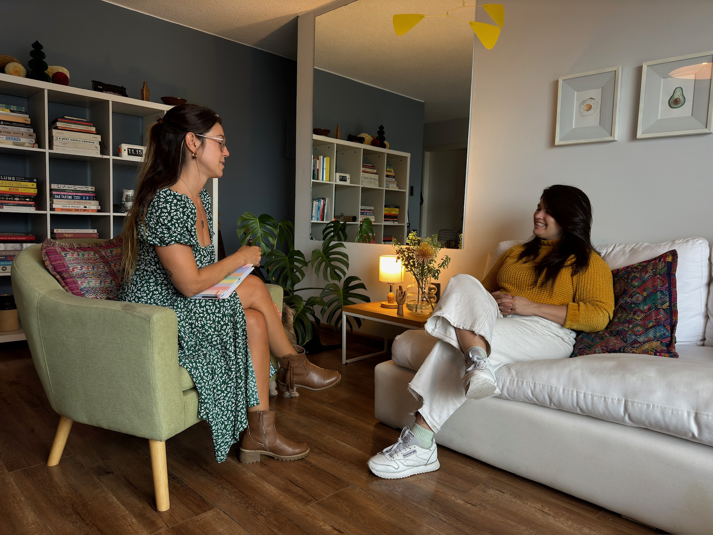

Qué hago
Colaboro en mejorar la calidad de vida de las personas a largo plazo mediante procesos de acompañamiento que defino como Mindful-Wellness Coaching.
Abarco además de las áreas más populares en la industria actual de la salud como son la nutrición y el estilo de vida, otras dimensiones del bienestar igualmente esenciales pero que no tienen tanto protagonismo (¡y deberían!), para lograr armonía y balance en nuestro organismo.
Considero que para lograr cualquier cambio sostenible es necesario que sea elaborado desde adentro hacia afuera, por eso además de analizar y modificar la alimentación y los hábitos cotidianos, integro también otros aspectos como la higiene del sueño, la práctica de la conciencia plena, la regulación del sistema nervioso y sobre todo la atención y el trabajo constante sobre las narrativas internas: tratarnos a nosotros mismos con compasión es el primer paso hacia la buena salud y el auto-cuidado.
Desarrollarse y evolucionar en estos aspectos conlleva como hermosa y orgánica consecuencia experimentar una vida más plena, impregnada de energía y disfrute.
¿Querés que te cuente más? A mí me encantaría saber de vos. ¡Charlemos!
Te invito con una sesión de 30 minutos para conocernos. CLICK AQUÍ